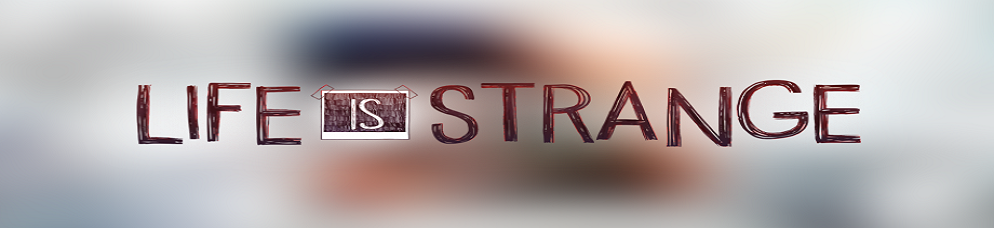

|  | |||
|---|---|---|---|
Chloe Elizabeth Price (11 Mart 1994 doğumlu) Hayat Tuhaf'ın ikili mücadelecisidir. Seattle'a taşınmadan önce Max Caulfield'ın en yakın arkadaşıydı ve Chloe'yu memleketi Arcadia Bay, Oregon'da bıraktı. Max gittikten sonra, Chloe kaybolmadan önce Rachel Amber'le en iyi arkadaş oldu. William Price ve Joyce Price'ın kızı ve David Madsen'in üvey kızıdır. |
|||